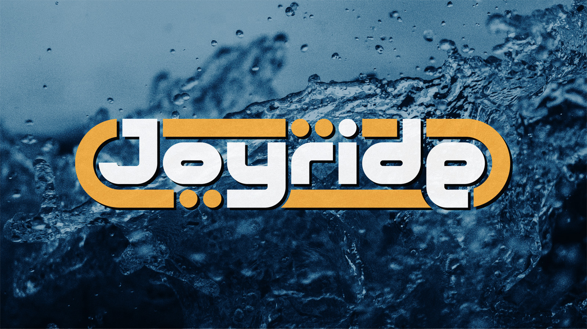
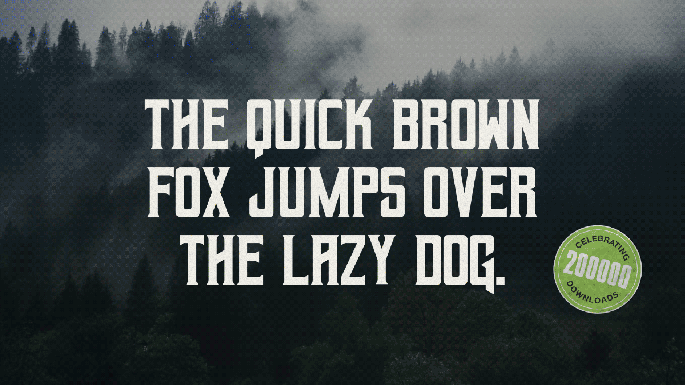
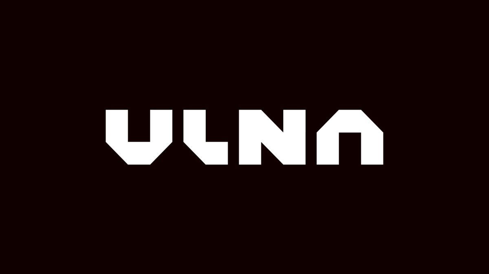
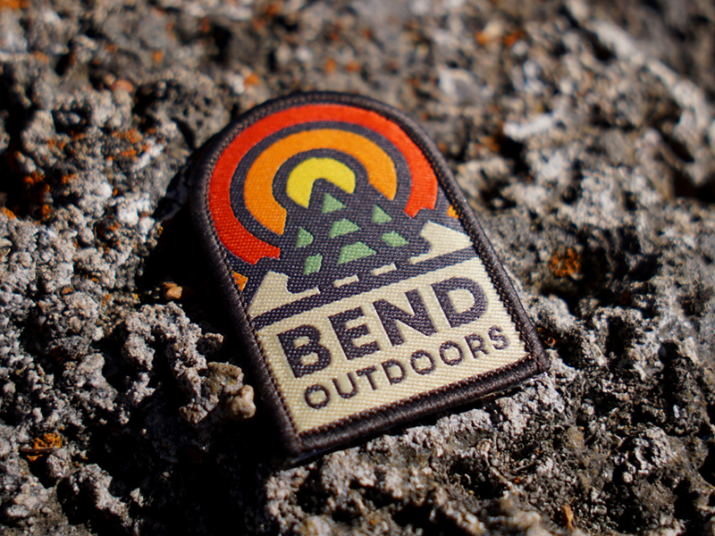
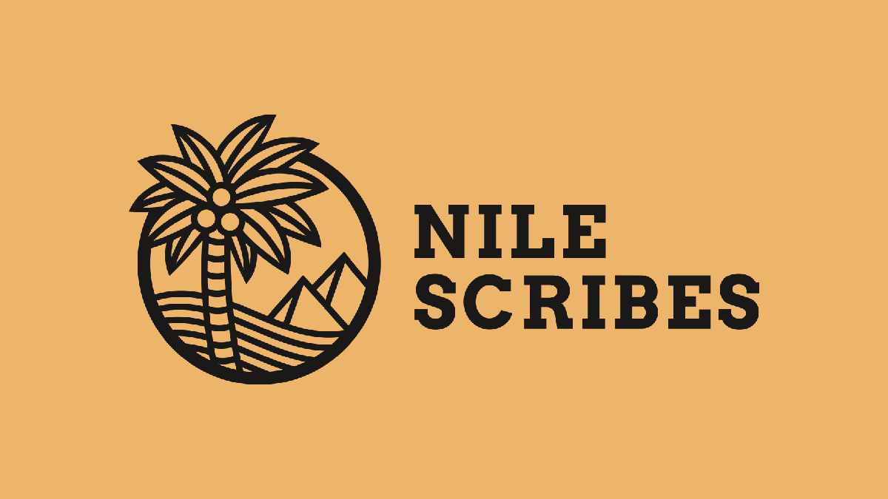
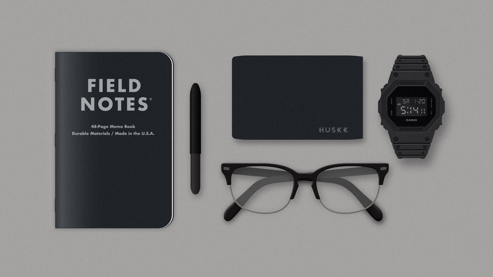
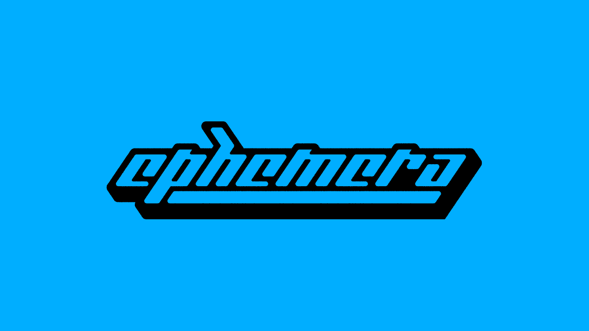

MATT COLE WILSON
————————————————————————————
graphic design / kansas city
MATT COLE WILSON
————————————————————————————
graphic design / kansas city

jet moto level logos → 10 logos inspired by the jet moto video game / personal project 2021 / see more

font design → various fonts i've created / personal and client work / view and download on the resources page

ghost → logotype inspired by y2k aesthetics / personal project 2021

ulna wristwatches → logo design & branding / award-winning contest entry 2019 / read more

bend outdoors → logo design / client work 2018

nile scribes → logo design / client work 2017 / visit their site

everyday carry → attempt at photorealistic illustration / personal project 2018

miscellaneous → various other pieces i'm proud of / watch it with music
© mattcolewilson → last updated january 2022